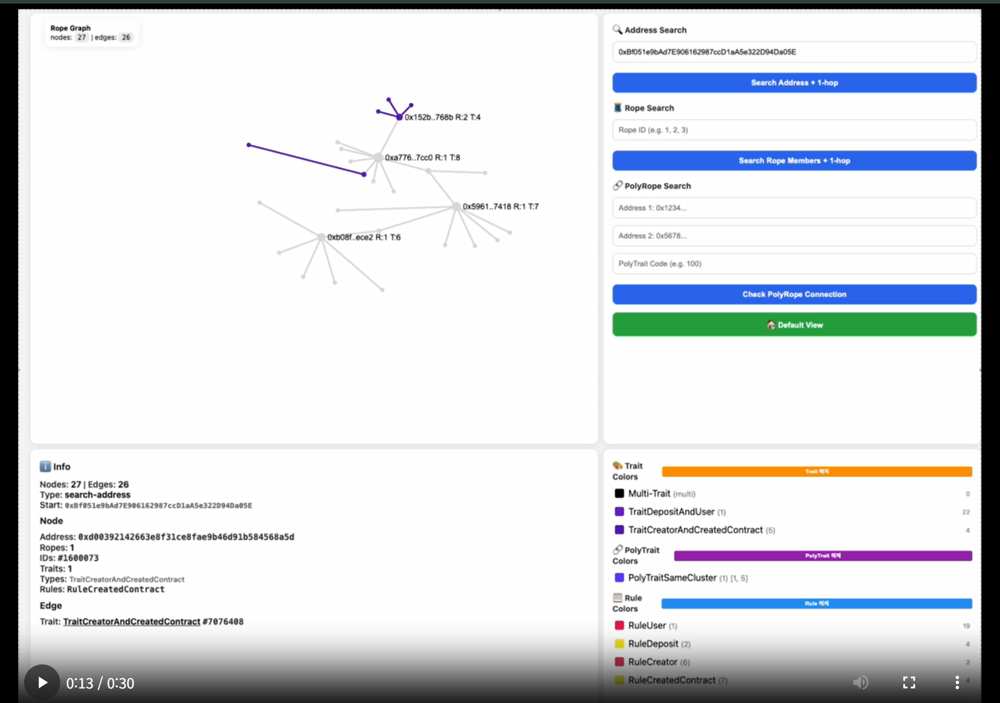
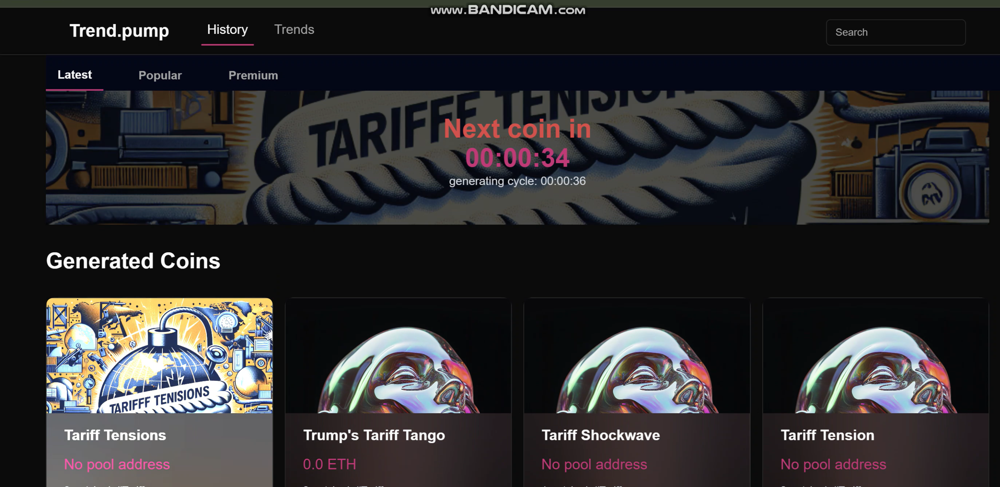
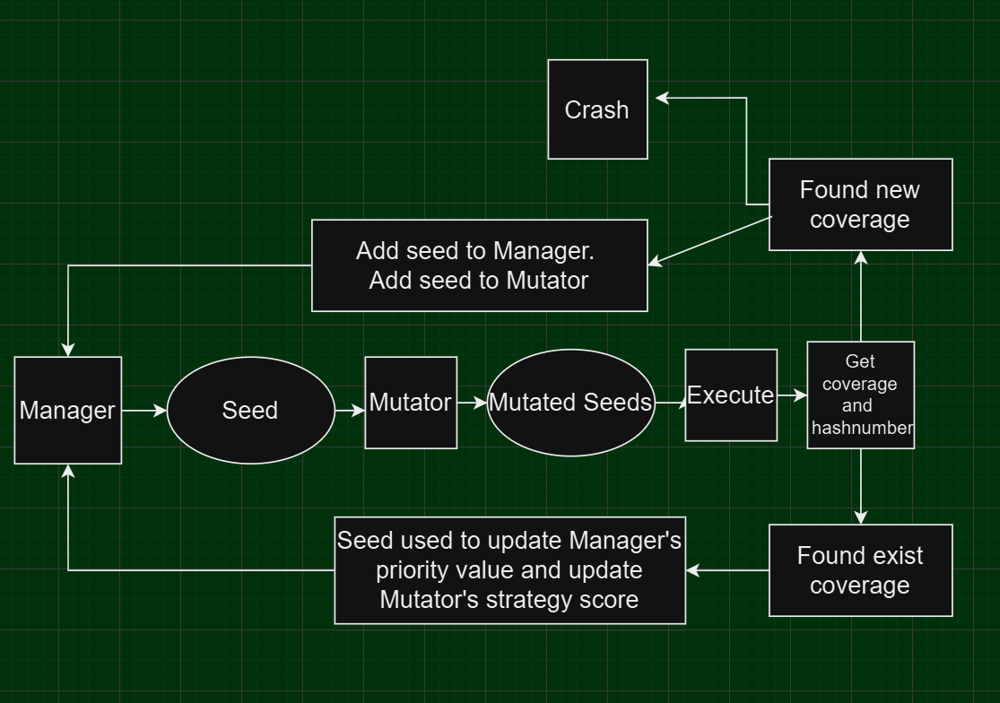
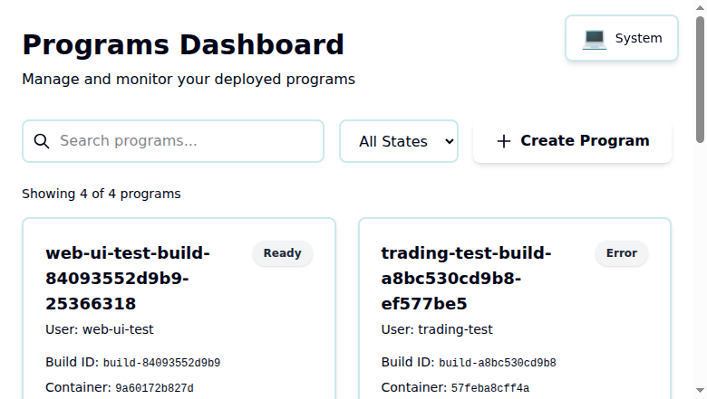

Making complex systems analyzable.
Work across static analysis, graph analysis, streaming pipelines, reactive systems, and quant trading.
Featured Work
Selected projects across owned repositories, external contributions, and collaborative systems. Each is selected for technical depth, not polish alone.

PublicAnalyzer
OwnedBlockchain transaction relationship analyzer for clustering wallets and detecting linked accounts before abuse.
- Triplet logic detects CEX, deposit, and user relationships.
- RopeDB stores trait-linked graph components with async mark updates.
- Includes stream fanout, backpressure, graph UI, and benchmark notes.
S_A_Benchmark
OwnedBenchmark suite for cases where ordinary benchmarks fail: sharded Bloom filters for blockchain-like skew and KVDB workloads for append-heavy indexed storage.
- Sharded Bloom filter measured at 4.30x faster insertion and 4.77x overall throughput.
- KVDB benchmark covers 200M append/read checks across BoltDB, sharded BoltDB, and BadgerDB.
- BadgerDB keeps the 200M-entry benchmark at 5.70 GB versus BoltDB's 33.30 GB result.
language_test
OwnedTiny Go language implementation in Go, built around a manual lexer, parser, resolver, and evaluator pipeline.
- `tinygo` pipeline is hand-built as lexer, parser, resolver, and evaluator stages.
- Spec covers Go-like syntax, static scoping, init-order hoisting, errors, built-ins, and multi-return assignment.
- Tests cover parsing, token tape behavior, resolver rules, and evaluator behavior.

blockchainValley_B
OwnedAI-generated news meme coin platform that turns live news into token metadata, generated images, and deployable ERC20 contracts.
- Parses Google News RSS and extracts structured coin metadata.
- Uses OpenAI image generation, S3 upload, and MongoDB persistence.
- Deploys ERC20 meme coins with reservation and pool logic.

Gno Fuzzer PR
ExternalProposed GnoVM-native fuzzer and CLI flow for testing Gno code with seed mutation, coverage hashing, and priority scheduling.
- Designed as a Gno-native fuzzing path rather than an external harness.
- Added `gno test -fuzz`, `testing.F`, mutator, parser, logger, and manager components.
- Closed as outdated after feature-freeze delay, so presented as proposed work.
Hersh
CollaborativeGo reactive framework for deterministic managed execution, monitoring, stateful context, signal priority, and recovery.
- `WatchCall`, `WatchFlow`, `WatchTick`, memo, and typed watch values.
- Priority reducer loop processes lifecycle, user, and variable signals.
- `rlaau` is the sole listed contributor with 31 commits.

Hershy
CollaborativeContainer orchestration system for Go programs using Hersh reactive state management, Docker/gVisor, Host API, and WatcherAPI.
- Pure program state machine: Created to Building to Ready to Stopped.
- Security contracts include read-only rootfs and localhost-only WatcherAPI proxy.
- `rlaau` is the top listed contributor with 48 commits.
External Proof
Three high-signal references: a public CURG presentation, a measured Bloom filter result, and KOBAC news coverage.
Background
Education and work history behind the systems and project work.
Education
-
Korea University
Feb 2023 - Dec 2028BA, Computer Science
Work History
-
CURG
Apr 2025 - PresentCore Technical Member
Providing support for graph and program analysis in a blockchain academy.
-
Onblock
Aug 2024 - Feb 2025Development Partner
Developed a fuzzing program.
-
Blockchain Valley
Jul 2024 - Jan 2025Technical Lead
Led the development team in a blockchain academy, mentoring members on token development and deployment, data collection, and processing automation.